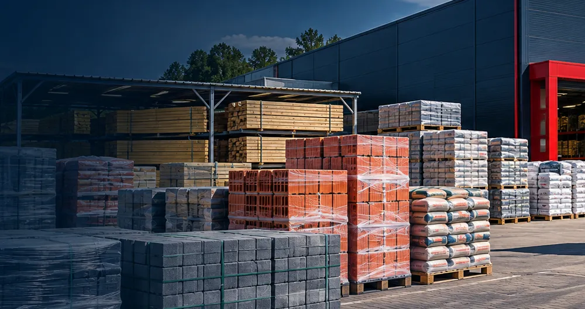
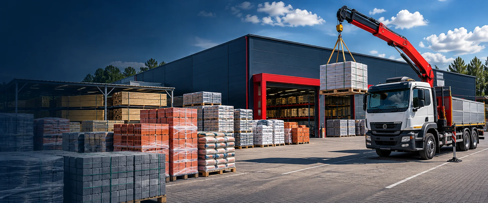
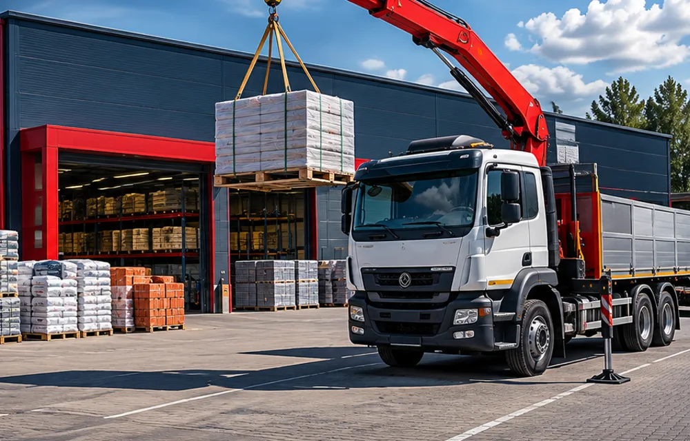

CENTRUM BUDOWLANE / DESIGN SYSTEM 1.0Jeden język wizualny.
Jeden język wizualny.
Każdy dział.
Wspólne zasady wyglądu dla aplikacji PWA i strony projektu: intensywna czerwień, głęboki granat, jasne panele i fotografie branżowe.
Paleta główna
Ściśle określone kolory, bez pastelowej czerwieni.
Granat główny
#06152B
Granat paneli
#0D2C4F
Czerwień akcji
#E30620
Czerwień hover
#B90D25
Niebieski danych
#0877D2
Jasne tło
#F2F5F9
Tekst
#10263F
Zielony sukcesu
#15805E
Karty operacyjne
Pełna czytelność na granatowych tłach, wyrazisty czerwony KPI dla marży.
Sprzedaż netto5,66 mln złDane przykładowe
Marża handlowa15,8%Dane przykładowe
Dostawy HDS216Dane przykładowe
Inwestycje12Dane przykładowe
Typografia i formularze
Hierarchia
Nagłówek modułu
Tytuł panelu
Tekst podstawowy ma zachować czytelność w dużych tabelach, a liczby KPI są wyraźnie większe.
Etykiety pomocnicze i opisy działańPrzyciski i wejście danych
ZatwierdzoneWeryfikacjaBlokadaW trasie
Tabele i statusy
| Zamówienie | Inwestor | Etap | Wartość netto |
|---|---|---|---|
| Z-0001 | Inwestor A | Kompletacja | 24 800 zł |
| Z-0002 | Inwestor B | Oczekuje | 11 200 zł |
| Z-0003 | Inwestor C | Zatwierdzone | 31 400 zł |
Cztery działy działalności
Na aplikacji fotografie branżowe są ładowane z Pexels. W trybie offline dostępne są ilustracyjne kadry koncepcyjne.

Hurtownia budowlana
Hurtownia elektrycznaTartak

Transport HDSReguły wdrożenia
Aplikacja PWA
Sidebar i topbar w głębokim granacie. Karty KPI w granacie i czerwieni. Jasne tabele, rzeczywiste formularze, odpowiedzialność za dokumenty i widoki zależne od roli.Strona prezentacyjna
Duże zdjęcie w hero, prezentacja czterech działów, opis procesów, galeria prawdziwych zrzutów ekranu, działający link do demo oraz dokumentacja GitHub.